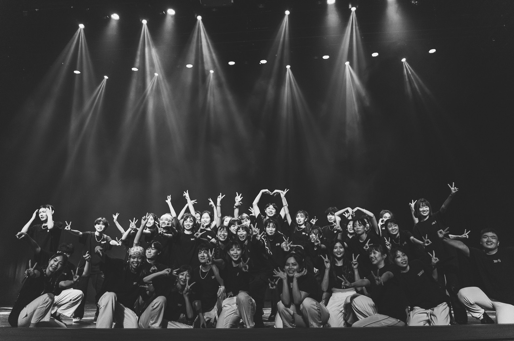
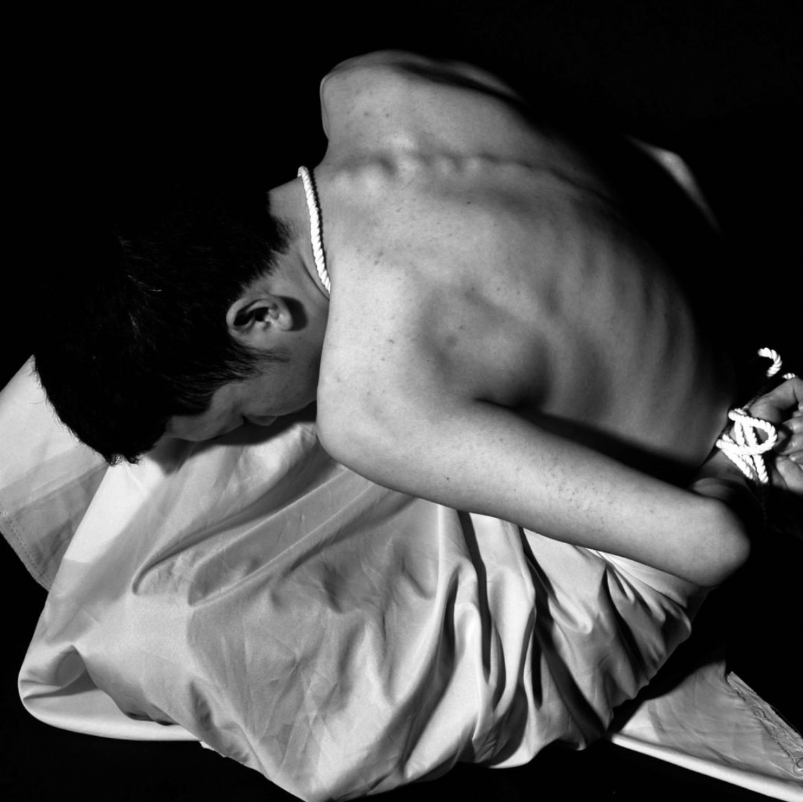

【3D】
The future world

【Dance】
22 Zenith

【Dance】
Wutang
【photo】
The future world

【3D】
The future world
【Dance】
The future world
姓名 | 詹筑菁
學習經歷 | 畢業於雲林科大 數媒系
實習經歷 | 於義大利進行交流
好young雲林街舞比賽 季軍 /全國中等街舞大賽入圍/台中玻璃盃賽 四強
hero for who 街舞比賽 佳作 / 台中街舞大賽入圍 /入圍
3D Design
作品名稱：未來世界的葬禮
作品理念：此作品是運用3D建模軟體Maya所建造成，圖呈現的是電子式墳墓，在未來土地稀缺的情況下，人們會用電子式的方式來悼念往者，不僅是節省土地浪費，也可以把對人們的思念及他們的過往存放在裡面。


Graphic Design
作品介紹:
平面設計皆是運用Adobe illustrator所繪製而成，每個設計都有不同理念，包括logo設計、商品折價卷設計、貼紙設計、icon設計等，
在創作過程我也學習到了很多也期待有更多作品生成。
Video Design
作品名稱：Limbs
作品理念：因為我本身是學舞蹈的，我覺得舞者們的肢體語言與展現非常漂亮，所以想運用鏡頭將肢體所呈現出
的『生、老、病、死』所記錄下來。
[ video capture ]

[ video capture ]

[ video capture ]
[ video capture ]